Не лише люди здатні на дивовижні досягнення. Для тварин теж знайшлося місце в Книзі рекордів Гіннесса.

Відомі тварини
Тварини - рекордсмени Книги рекордів Гіннесса
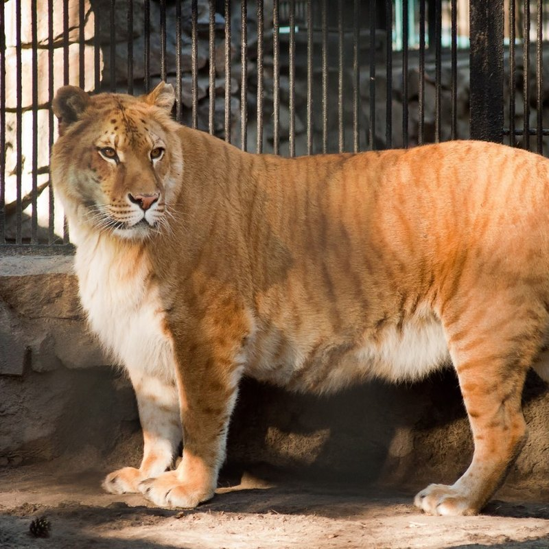
Геркулес - Лигр, який в 2006 році був зареєстрований в Книзі рекордів Гіннеса як найбільший представник котячих з живучих на Землі, зріст - 3,7м.
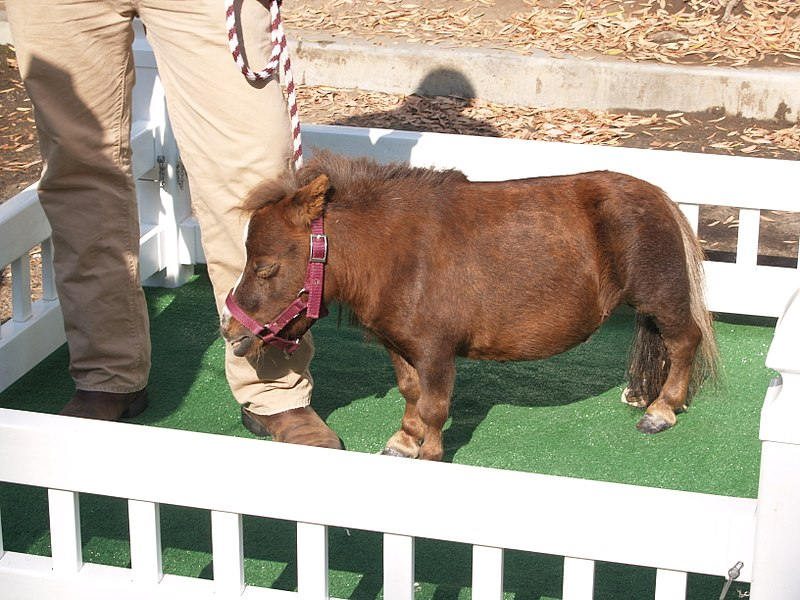
Дюймовочка - карликова міні-кінь і найменший кінь у світі. Вона має розмір 43 сантиметри (17 дюймів) у висоту і важить 26 кілограмів (57 фунтів).
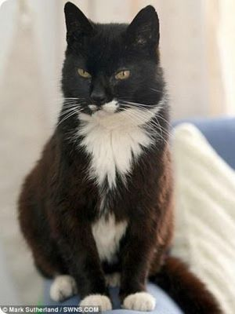
Крим Пафф - кішка, яка прожила 38 років і 3 дня. Була включена в Книгу рекордів Гіннесса, як сама довгоживуча кішка з усіх коли-небудь.
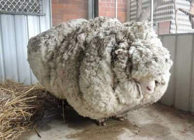
Баран з самою густою шерстю у світі. З цього барана зрізали більше сорока кілограмів вовни. Справа в тому, що тварина була знайдена недалеко від столиці Австралії. Експерти вважають, що його не стригли цілих 5 років.
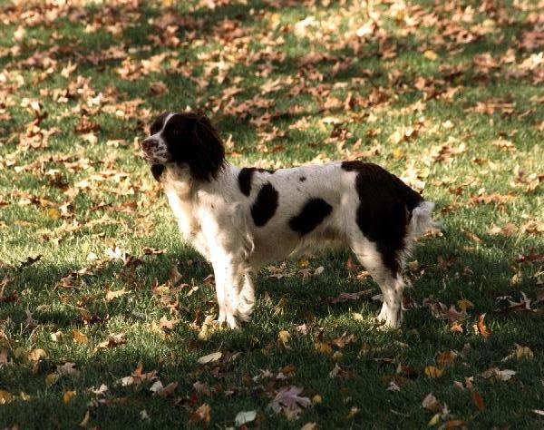
Мілдред ( «Міллі») Керр Буш - собака президента США Джорджа Буша старшого породи англійський спрингер-спаніель. «Книга Міллі», написана у вигляді її автобіографії, була продана в кількості 400 тисяч примірників, що принесло дохід у 900 тисяч доларів. Це більше доходу самого господаря в 4 рази.
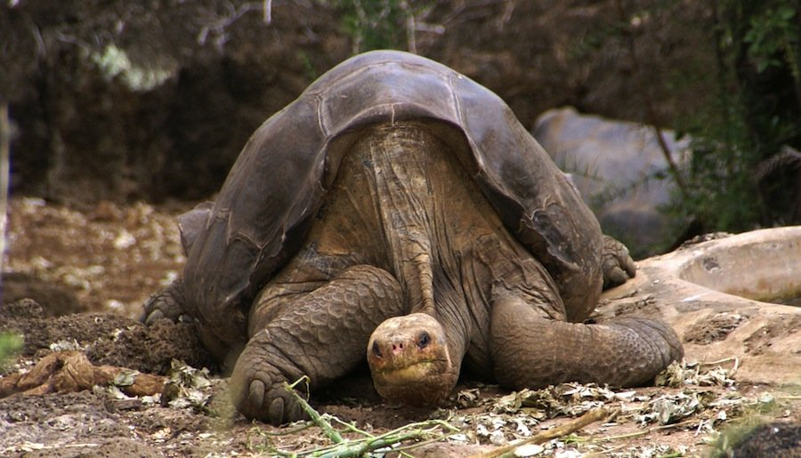
Черепасі Джонатану щонайменше 179 років, і він - найстаріше відоме тварина в світі. Джонатан насолоджується життям у компанії п'яти черепах-самок, і, хоча він і сліпий на одне око, вік для нього, схоже, не перешкода: він любить увагу і до сих пір досить агресивний, щоб захистити своїх молодих порівняно з ним дружин від сексуальних домагань інших самців.
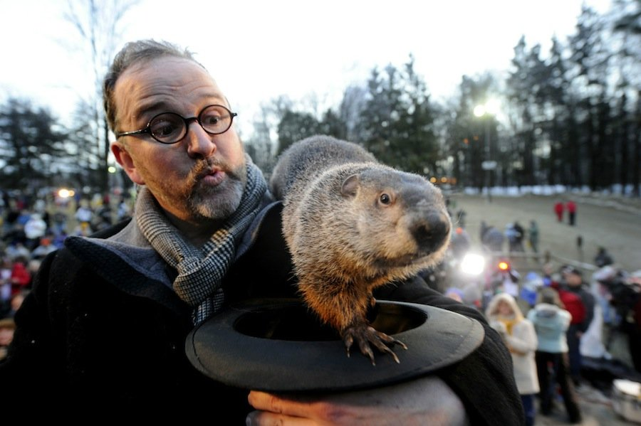
Найвідоміший бабак в світі, Панксатонскій Філ, також відомий під повним ім'ям Панксатонскій Філ, Провидець з провидців, мудрець з мудреців і Найбільший Провісник Погоди, традиційно передбачав погоду щороку 2 лютого, в День Бабака, починаючи з 1886-го року.
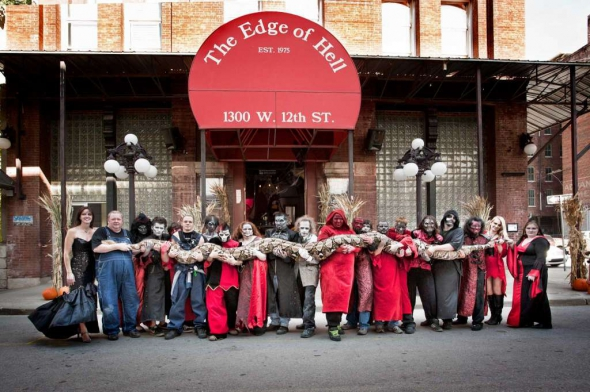
Довжина сітчастого пітона на ім'я Мадам Медуза становить понад 7,5 м. Він живе в Канзас-сіті, штат Міссурі, і регулярно бере участьу виставах для любителів полоскотати собі нерви. В його меню - кролики й поросята, а кожні 2 тижні йому подають цілого оленя.
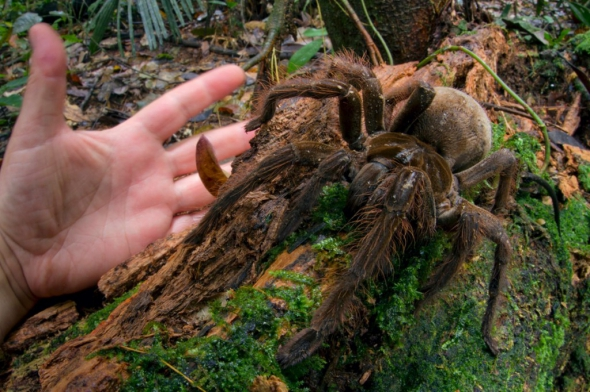
Це найбільший павук у світі. Він живе в амазонських джунглях і полює на жаб, жаб, ящірок, мишей і невеликих змій. Може важити 175 г із розмахом кінцівок до 28 см. А ось птахів, незважаючи на свою назву, не їсть.
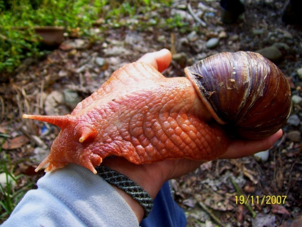
Гігантський африканський равлик. Він розміром з долоню. Живе не тільки в Африці і вирізняється хорошим апетитом і великою швидкістю розмноження.

Даріус - найбільший кролик у світі. Важить 22,5 кг і має понад 130 см в довжину. У нього є син на ім'я Джефф, який ще росте, але вже наздоганяє за розмірами тата. Утримання цієї парочки обходиться їхній господині, 63-річній Аннетт Едвардс, в 5000 фунтів стерлінгів на рік.
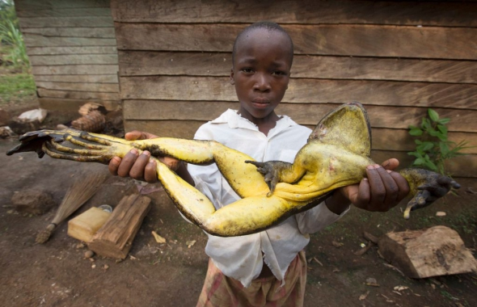
Жаба - Голіаф. Камерун з Екваторіальної Гвінеї - найбільша із сучасних жаб. Довжина її тіла може досягати 30 см, а з випростаними лапами - ще більше. В іншому ж вона мало відрізняється від звичайних жаб. Її пуголовки мають звичайний розмір. Проте вони дуже активно ростуть.